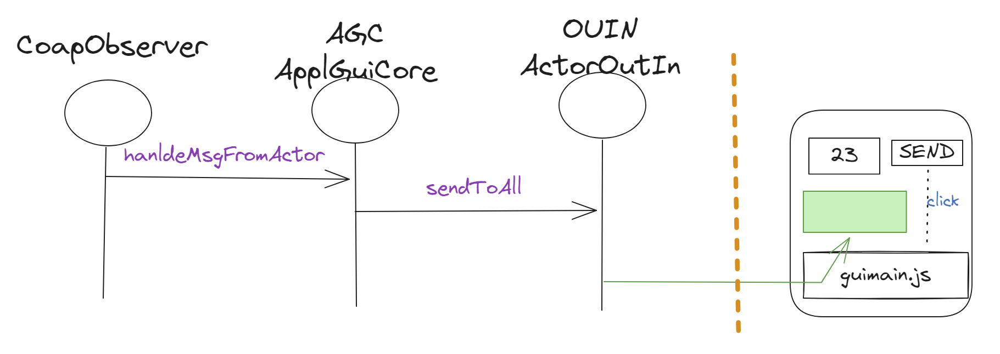

Facade24Start¶
(Fcd24S)
Lo scopo di questo lavoro è usare SpringBoot per costruire lo (Fcd24S) che fornisca una
Web-GUI per l’interfacciamento con applicazioni qak.
Procederemo in due passi:
Come primo passo, costruiremo La parte statica dell’applicazione che riguarda la impostazione della pagina HTML.
Come secondo passo, costruiremo La parte dinamica, che permette all’applicazione Web di interagire da un lato con utente umano (attraverso un Browser) e da un altro lato con una applicazione qak, come ad esempio il sistema service o il BasicRobot24.
{kind=link}
La parte statica¶
Anticipiamo qui che per la configurazione della pagina HTML:
useremo Bootstrap5, come indicato in Usiamo Bootstrap5
useramo gli script (da noi deifniti) ioutils.js e wsminimal.js egli Stili custom: issSpec.css
La parte dinamica¶
Impostiamo l’organizzazione del FacadeController lato server (Rc RemoteController in figura),
evidenziando le seguenti interazioni (supponendo che l’attore applicativo di riferimento
indicato nel file di configurazione facadeConfig.json sia basicrobot):
: Realizziamo l’interazione sincrona Pagina-FacadeController via HTTP
: Realizziamo l’interazione FacadeController-basicrobot usando TCP.
: Realizziamo l’interazione basicrobot-FacadeController per far giungere alla applicazione Web informazioni sullo stato del sistema.
: Realizziamo l’interazione asincrona FacadeController-Pagina per visualizzare sulla pagina HTML le informazioni sullo stato del sistema, con la mediazione del FacadeController.
{kind=link}
In linea di principio, una pagina HTML potrebbe anche agire come osservatore diretto (via CoAP o MQTT) del basicrobot. Tuttavia, notiamo che:
I Browser non supportano API JavaScript per CoAP/MQTT per motivi di sicurezza
Questo rende necessario che il FacadeController funga da mediatore tra le informazioni emesse via CoAP o MQTT da
basicrobot e la pagina, attraverso le interazioni BrToRc e RcToPg.
Fcd24S: startup¶
Procedendo in accordo ai Primi passi con SpringBoot costruiamo uno schema iniziale del progetto che, in quetsa sede, in quanto già opportunamente configurato con dipendenze a (vecchie) versioni di SpringBoot, allineate con le nostre esigenze.
Per i WebJars si veda Bootstrap e webJars.
Enable SpringBoot live DevTools¶
La feature di auto-restart mediante Spring Developer Tools non sembra abilitata di default in Intellij (come avviene invece in Eclipse).
Per provare ad attivare manualmente questa feature, si consulti la rete, ad esempio : https://medium.com/javarevisited/spring-boot-developer-tools-and-intellij-b16c7e5f39e4
Fcd24S: vista interna¶
L’organizzazione interna della Facade si compone di oggetti Java, che vengono creati a partire dal componente FacadeController, che demanda a FacadeBuilder la creazione di tutti i componenti del sistema
FacadeBuilder crea e configura gli altri componenti del sistema |
{kind=link}
WebSocketConfiguration è il componente che abilita le ws in Spring e che viene creato subito dal configuratore di SpringBoot
FacadeController dà la pagina iniziale. Il suo costruttore crea FacadeBuilder.
Molti componenti ovviamente nascono perchè voluti dal framework SpringBoot.
La presenza di ApplguiCore e di ActorOutIn è invece legata ai SOLID de La Clean Architecture: i metodi dell’adapter` ActorOutIn usato da ApplguiCore sono quelli richiesti dall’ApplguiCore stessa per interagire con il mondo esterno.
La costruzione della Facade adotta il seguente schema:
la Facade costituisce un (sotto)sistema autonomo, che si relaziona con il sistema applicativo comunicando con l’attore
<actorName>le interazioni tra il sistema applicativo e la Facade avvegono via websocket
la Facade è costruita in SpringBoot. Il suo FacadeController fornisce solo la pagina iniziale composta da una area di input e una area di output
la parte che realizza e gestisce l’input deve essere ridefinita per ogni diversa applicazione, mentre la parte che realizza e gestisce l’output può essere considerata invariante
la interazione con l’attore
<actorName>del sistema applicativo avviene in due modi:usando una connessione TCP (si veda ActorOutIn) al contesto dell’attore, usata per inviare all’attore le richieste di input. La risposta viene visualizzata nell’area di output (si veda updateMsg);
osservando via CoAP (si veda CoapObserver) le informazioni inviate dall’attore usando la primitiva updateResource, che vengono visualizzati nell’area di output.
La costruzione della Facade inizia dal CustomContainer, che invoca ApplSystemInfo.readConfig() che legge il file facadeConfig.json, che include le informazioni necessarie per la configurazione della Facade
facadeConfig.json¶
Il file facadeConfig.json fissa i valori di variabili che danno le informazioni sul sistena. Ad esempio:
{"host":"localhost", "port":"8020", //qak application node
"context":"ctxbasicrobot", "facade": "<actorname>", //qak actor di riferimento e suo contesto
"facadeport":"8085", //port della Facade come Web application
"sysdescr":"basicrobot24" //file .pl che contiene la descrizione del sistema qak
}
Il file viene letto usando QaksysConfigSupport che setta variabili contenute nella classe ApplSystemInfo che funge da base di conoscenza (Java) sul sistema.
Fcd24S: interazioni¶
La figura che segue mostra le interazioni con riferimento alla qak-applicazione servicemath
{kind=link}
{kind=link}
Fcd24S: funzionamento¶
Un client (diciamo clientMaster) esegue http://localhost:8085. La pagina può essere aperta anche da altri nodi.
FacadeController restituisce pagina HTML che include gli script ioutils.js e wsminimal.js
il clientMaster preme uno dei pulsanti presentati dalla GUI per inviare un comando (dispatch) o una richiesta (request) all’ppliazione qak
il server esegue
handleTextMessagedi WSHandler che chiamahandleWsMsgdi ApplguiCore che chiamadorequestdi ActorOutIn che confeziona un IApplMessage msg e chiamasendToActor(IApplMessage message, String requestId)che fatcpConn.request(message)SINCRONA, attendendo la rispostaquando l’attrore applicativo
<actorName>invia la risposta, ActorOutIn eseguehandleReplyMsgdi ApplguiCore che gestisce la risposta chimandosendToAll(..)di ActorOutIn che chiamasendToAll(..)di WSHandler per aggiornare tutte le pagine connesse, tra cui quella del clientMaster.ioutils.js della pagina HTML di ogni client esegue
socket.onmessagee quindi visualizza il messaggio ricevuto via websocket nell’area di output.
Facade24: i componenti¶
Si riporta nel seguito l’elenco dei componenti interni di Facade24, con qualche elemento di codice, lasciando i dettagli alla consultazione dei files sorgente nel progetto.
CustomContainer¶
Crea ApplSystemInfo e fissa il nome della applicazione al valore
ApplSystemInfo.appName, , che viene riportata nella
pagina HTML attraverso l’attributo "appname".
@Configuration
public class CustomContainer implements
WebServerFactoryCustomizer<ConfigurableServletWebServerFactory>
ApplSystemInfo.readConfig();
int port = ApplSystemInfo.facadeport;
factory.setPort(port); //customization
public void customize(ConfigurableServletWebServerFactory factory)
ApplSystemInfo¶
CustomContainer crea un oggetto di questa classe, che legge il file facadeConfig.json (usando QaksysConfigSupport) e fissa i valori di variabili che danno le informazioni sul sistena:
public static String qakSysHost;
public static String qakSysPort;
public static String qakSysCtx;
public static String applActorName;
public static String ctxportStr;
public static int ctxport;
public static String facadeportStr;
public static int facadeport;
public static String appName;
QaksysConfigSupport¶
Utility per leggere i valori del file facadeConfig.json .. code:
public class QaksysConfigSupport
public static List<String> readConfig( String fName )
protected static List<String> readTheContent( String config ) throws JSONException
FacadeController¶
Questo componente restituisce semplicemente la pagina qakFacadeGui.html. Tutte le interazioni col server saranno via WebSocket.
@Controller
public class FacadeController
protected ApplSystemInfo qakSys;
private void updateViewmodel(Model model, String info )
@GetMapping("/")
public String homePage(Model viewmodel){
viewmodel.addAttribute("appname", ApplSystemInfo.appName);
return "qakFacadeGUI";
}
FacadeBuilder¶
Componente che crea e configura gli oggetti-componenti della Facade:
WSHandler che opera come gestore dei messaggi su WS
ApplguiCore che contiene la logica applicativa (domain core) della gui
ActorOutIn che lavora come Adapter verso l’attore
<actorName>descritto nel file facadeConfig.json.CoapObserver che crea un client-observer CoAP verso l’attore
<actorName>
wsHandler = new WSHandler();
outinadapter = new ActorOutIn( wsHandler );
guiCore = new ApplguiCore(outinadapter);
outinadapter.setGuiCore(guiCore); //Injection
wsHandler.setGuiCore(guiCore); //Injection
L’injection è necessaria per via del’ordine di costruzione e della mutua referenza.
WebSocketConfiguration¶
Questo componente è richiesto da SpringBoot per la gestione delle ws (tramite WSHandler creato da FacadeBuilder).
@Configuration
@EnableWebSocket
public class WebSocketConfiguration implements WebSocketConfigurer
public final String wsPath = "/accessgui";
@Override
public void registerWebSocketHandlers(WebSocketHandlerRegistry registry) {
registry.addHandler(FacadeBuilder.wsHandler, wsPath).setAllowedOrigins("*");
}
WSHandler¶
Gestore delle interazioni via WebSocket.
public class WSHandler extends AbstractWebSocketHandler
private ApplguiCore guiCore;
//Injiection
public void setGuiCore(ApplguiCore gui) {
guiCore = gui;
}
@Override
protected void handleTextMessage( WebSocketSession session,TextMessage message)
guiCore.handleWsMsg( msg );
protected synchronized void sendToAll(String message)
for (WebSocketSession session : sessions) {
try {
session.sendMessage(new TextMessage(message));
} catch (Exception e) {
...
}
}
Il metodo sendToAll è synchronized perchè vi possono essere chiamate concorrenti da
ApplguiCore e CoapObserver.
ApplguiCore¶
Rappreesenta il della Facade, che ha la responsabilità di decidere cosa fare per ogni messaggio di input e come inviare informazioni in uscita attraverso l’adapter ActorOutIn.
public class ApplguiCore
private ActorOutIn outinadapter;
public ApplguiCore( ActorOutIn outinadapter ){
this.outinadapter = outinadapter;
destActor = ApplSystemInfo.applActorName;
}
public void hanldeMsgFromActor(String msg, String requestId)
updateMsg( msg );
protected void updateMsg( String msg )
outinadapter.sendToAll( msg );
public void handleWsMsg(String msg, String msgId) msg = request/20 che chiama:
//isola il payload 20 dal msg = request/20 e poi chiama
private void dorequest( String payload )
outinadapter.dorequest(
"gui",destActor,reqid,reqcontent.replace("X",payload) );
ActorOutIn¶
Crea la connessione TCP all’attore <actorName> del sistema applicativo
public class ActorOutIn
public ActorOutIn(WSHandler wsHandler )
crea tcpConn all'actor di Facade
public void dorequest(String msg )
IApplMessage message = CommUtils.buildRequest(senderId, reqid, reqarg , destActor);
sendToActor( message );
private void sendToActor( IApplMessage message )
CoapObserver¶
Osserva l’attore <actorName> da cui riceve le informazioni inviate da
updateResource e le
invia a hanldeMsgFromActor di ApplguiCore che le pubblica su tutte le pagine connesse usando
WSHandler
public class CoapObserver implements CoapHandler
public CoapObserver(ApplguiCore guiCore, String actor)
@Override
public void onLoad(CoapResponse response)
guiCore.hanldeMsgFromActor(response.getResponseText(), "");
@Override
public void onError()
wsminimal.js¶
Codice JavaScript inserito nella pagina HTML per interagire con il server via WebSocket.
ioutils.js¶
Codice JavaScript inserito nella pagina HTML per inviare al server comandi e richieste, usando Ajax.
Fcd24S: sperimentazione¶
Attivare il VirtualRobot (VR)
Posizionarsi sulla direcory unibo.basicrobot24 ed attivare il basic robot con il comando gradlew run (osservare il movimento del VR)
Posizionarsi sulla directory Facade24Start ed eseguire gradlew bootRun
Aprire un browser all’indirizzo http://localhost:8085
La pagina HTML¶
La pagina HTML che compare: Fcd24SGUI.html